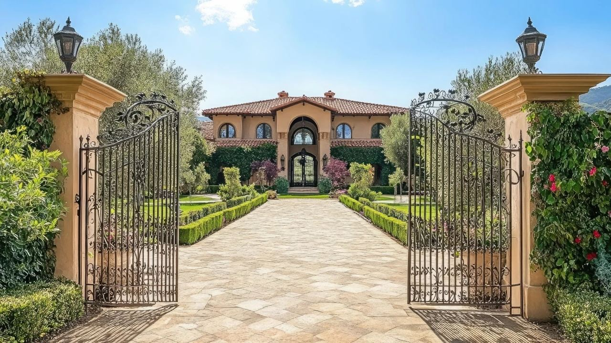
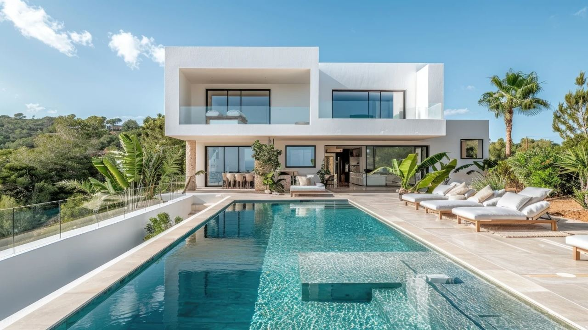
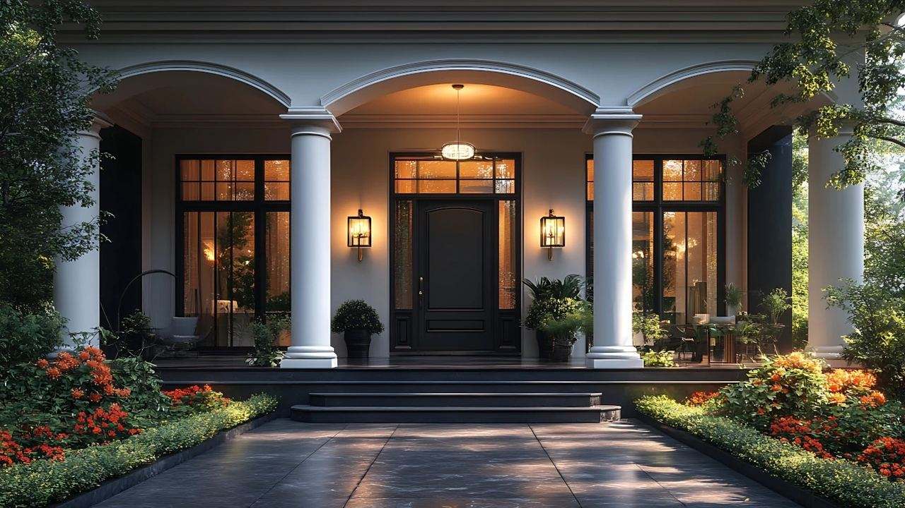
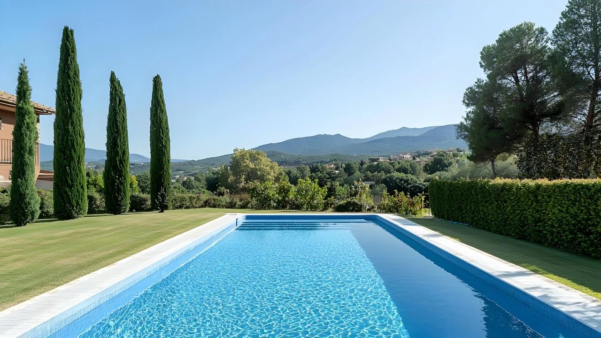

Costa del Sol · Orte
La Zagaleta – der exklusivste Ort Europas
 Von Lucyna Gacek · · aktualisiert · 3 Min. Lesezeit
Von Lucyna Gacek · · aktualisiert · 3 Min. Lesezeit

Kurz gesagt: La Zagaleta ist eine private, bewachte Wohnanlage von rund 900 Hektar in den Hügeln von Benahavís, nur eine kurze Fahrt von Marbella und Puerto Banús entfernt. Es gibt dort ausschließlich freistehende Villen auf großen Grundstücken, zwei private 18-Loch-Golfplätze, ein Reitzentrum und Sicherheitsdienst rund um die Uhr. Häuser kosten dort meist mehrere Millionen Euro.
Marbella steht für Luxus, doch eine Adresse in den Hügeln überragt alle anderen. La Zagaleta gilt oft als die exklusivste Wohnanlage Europas. Hier erfahren Sie, was sie bietet, wie das Leben dort aussieht und was Sie vor einem Kauf wissen sollten.
Was ist La Zagaleta?

La Zagaleta ist eine private Wohnanlage in der Gemeinde Benahavís an der Costa del Sol. Sie umfasst rund 900 Hektar Hügel, Wald und Täler zwischen der Küste und der Serranía de Ronda, mit Blick auf das Mittelmeer und an klaren Tagen bis nach Gibraltar und Afrika.
Sie entstand ab den 1990er-Jahren auf einem ehemaligen Jagdgut. Die Idee war von Anfang an einfach: sehr wenige Häuser, sehr große Grundstücke und viel Natur dazwischen. Trotzdem sind das Zentrum von Marbella und der Jachthafen Puerto Banús nur etwa 20 Autominuten entfernt.
Die Villen

In La Zagaleta gibt es ausschließlich freistehende Villen, keine Wohnungen oder Reihenhäuser. Die Grundstücke sind meist zwischen etwa 3.000 m² und mehr als 10.000 m² groß, die Nachbarn sind also weit entfernt und die Aussicht bleibt frei.
Jede Villa ist ein Einzelentwurf, viele von bekannten Architekten, vom klassischen andalusischen Landsitz bis zum minimalistischen Glashaus. Große Häuser haben oft Spa, Kinoraum, Fitnessraum, Weinkeller, Personalwohnung und Garagen für Autosammlungen. Die Preise beginnen meist bei mehreren Millionen Euro, die größten Anwesen kosten weit mehr.
Sicherheit und Privatsphäre

Privatsphäre ist für viele Eigentümer der Hauptgrund für La Zagaleta. Die Anlage hat:
- einen eingezäunten Außenbereich mit bewachten Toren,
- einen Sicherheitsdienst rund um die Uhr,
- Videoüberwachung und Streifen,
- eigene private Straßen, die nicht öffentlich zugänglich sind.
Besucher kommen nur herein, wenn ein Bewohner sie angemeldet hat. Zusammen mit der geringen Bebauungsdichte entsteht so eine Ruhe und Diskretion, die man sonst an der Küste kaum findet.
Das Leben in der Anlage

Bewohner und ihre Gäste nutzen:
- zwei private 18-Loch-Golfplätze, beide nur für Mitglieder,
- ein Clubhaus mit Restaurant,
- ein Reitzentrum und Reitwege,
- Tennis- und Padelplätze,
- Wander- und Mountainbike-Wege durch die Hügel,
- einen Hubschrauberlandeplatz und Concierge-Dienste, auch zur Betreuung des Hauses während der Abwesenheit.
Außerhalb der Tore ist die Küste nah: Puerto Banús und Marbella in etwa 20 Minuten, Ronda in etwa 45 Minuten und der Flughafen Málaga in unter einer Stunde.
Eine gute Investition?
Das Angebot ist sehr knapp, denn die Zahl der Grundstücke ist festgelegt und jedes Jahr kommen nur wenige Villen auf den Markt. Gleichzeitig ist die Nachfrage im obersten Segment von Marbella stark geblieben. Diese Kombination hat die Werte über die Jahre gut gestützt.
Ein Kauf hier bleibt eine langfristige Entscheidung. Die laufenden Kosten sind hoch, von den Gemeinschaftsgebühren bis zu Personal und Instandhaltung, und der Kreis der Käufer für ein Haus dieser Größe ist klein. Verschaffen Sie sich vor der Entscheidung einen klaren Überblick über alle Kosten.
Häufige Fragen
Wo liegt La Zagaleta?
In den Hügeln von Benahavís an der Costa del Sol in der Provinz Málaga, etwa 20 Autominuten von Marbella und Puerto Banús.
Was kostet eine Villa in La Zagaleta?
Villen beginnen meist bei mehreren Millionen Euro. Die größten Anwesen mit Meerblick kosten deutlich mehr.
Kann man La Zagaleta besuchen?
Nein. Es ist eine private Anlage mit bewachten Toren. Besucher müssen von einem Bewohner angemeldet werden, Besichtigungen von Villen zum Verkauf organisiert ein Makler.
Welche Einrichtungen hat La Zagaleta?
Zwei private 18-Loch-Golfplätze, ein Clubhaus, ein Reitzentrum, Tennis- und Padelplätze, Wanderwege, einen Hubschrauberlandeplatz und einen Sicherheitsdienst rund um die Uhr.
Kaufen in La Zagaleta
Villen in La Zagaleta werden oft diskret verkauft, ohne öffentliches Inserat. Wenn Sie sehen möchten, was verfügbar ist, oder es mit anderen Top-Anlagen in Benahavís und Marbella vergleichen wollen, schreiben Sie uns. Wir organisieren diskrete Besichtigungen und begleiten Sie bei jedem Schritt des Kaufs.